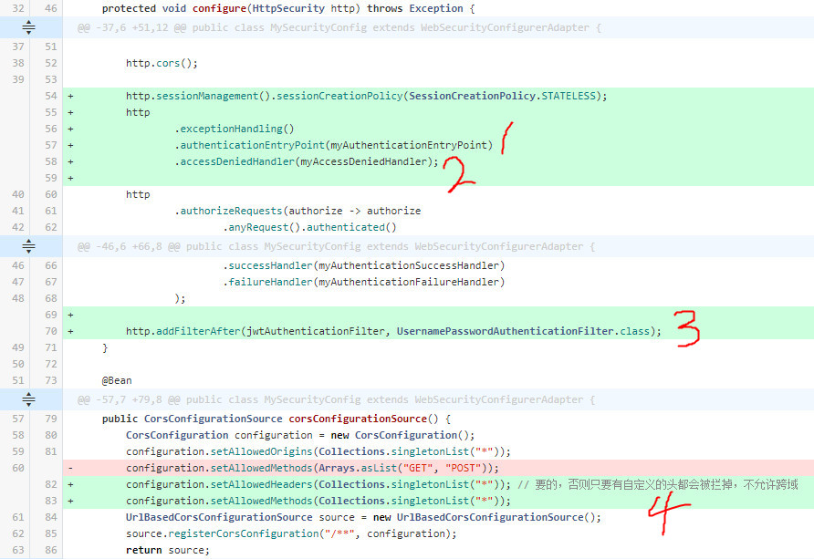

本系列终结篇，讲每个请求过来先走token认证。当然还有一些值得优化的点，但我不打算继续，因为接下来要去改造jaeger。这篇做完我顺便重新感受到了一点前后端分离的意义，就是让后端纯粹地做接口，省得处理白名单什么的乱七八糟的事情。
前端页面上加一块内容就是点击按钮发送请求，并用div展示响应结果，新增代码：
1 | <html> |
后端要稍微复杂点，结合代码来讲，并且整理一些优化的点和值得记忆的经验。
MySecurityConfig
- 配置myAuthenticationEntryPoint，当接到的请求是需要登录而未登录的话，由它回复响应。其实AuthenticationEntryPoint本义是用于“发起”一个认证，如默认实现中做的事情是重定向到登录页。
- 配置myAccessDeniedHandler，用于鉴权结果为“无权操作”时给出响应。
- 往过滤器链里加一个自定义的jwtAuthenticationFilter，执行token认证。
- 额外发现，跨域配置必须 setAllowedHeaders 也左上，不然如果请求里带了自定义 header 会被拦掉。但我想如果用 Authorization 这个头的话可能不需要配这条。

myAuthenticationEntryPoint
1 |
|
myAccessDeniedHandler
1 |
|
jwtAuthenticationFilter
这里有四点可说：1.改用Authorization这个头来放token值；2.给UserEntity增加authorities列，MyUserDetails修改getAuthorities实现为this.user.getAuthorities().stream()…；3.异常捕获那里可以改为捕获所有异常，再AuthenticationException(e.getMessage())都做成AuthExr让myAuthenticationEntryPoint处理；
第4点单独分开来说：jaeger里不再使用WrappedRequest，目前本来就用不着，控制器里如果需要获取用户信息可以从 SecurityContext 里取得。1
2
3
4
5
6
7
8
9
10
11
12
13
14
15
16
17
18
19
20
21
22
23
24
25
26
27
28
29
public class JwtAuthenticationFilter extends OncePerRequestFilter {
// ...
protected void doFilterInternal(HttpServletRequest request, HttpServletResponse response, FilterChain filterChain) throws ServletException, IOException {
try {
String token = request.getHeader("token");
if (token == null) {
throw new BadCredentialsException("没token，就当你没登录过");
} else {
User user = userRepository.findByUsername(token);
List<UserRole> userRoleList = userRoleRepository.findAllByUserId(user.getId());
List<Long> roleIds = userRoleList.stream().map(UserRole::getRoleId).collect(Collectors.toList());
List<Role> roleList = roleRepository.findAllById(roleIds);
List<RolePermission> rolePermissionList = rolePermissionRepository.findAllByRoleIdIn(roleIds);
List<Long> permissionIds = rolePermissionList.stream().map(RolePermission::getPermissionId).collect(Collectors.toList());
List<Permission> permissionList = permissionRepository.findAllById(permissionIds);
MyUserDetails md = new MyUserDetails(user, roleList, permissionList);
SecurityContext context = SecurityContextHolder.createEmptyContext();
context.setAuthentication(new JwtAuthenticationToken(md, md.getAuthorities()));
SecurityContextHolder.setContext(context);
}
filterChain.doFilter(request, response);
} catch (AuthenticationException e) {
SecurityContextHolder.clearContext();
this.myAuthenticationEntryPoint.commence(request, response, e);
}
}
}
JwtAuthenticationToken
这个参考 TestingAuthenticationToken，其他没什么要说的。1
2
3
4
5
6
7
8
9
10
11
12
13
14
15
16
17
18
19public class JwtAuthenticationToken extends AbstractAuthenticationToken {
private final Object principal;
public JwtAuthenticationToken(Object principal, Collection<? extends GrantedAuthority> authorities) {
super(authorities);
this.principal = principal;
super.setAuthenticated(true);
}
public Object getCredentials() {
return null;
}
public Object getPrincipal() {
return this.principal;
}
}
PermissionController
这里多放了一个只要登录就能访问的接口，测试用。1
2
3
4("/permission/saye")
public String play() {
return "尽情撒野"; // 只要登录了就行
}